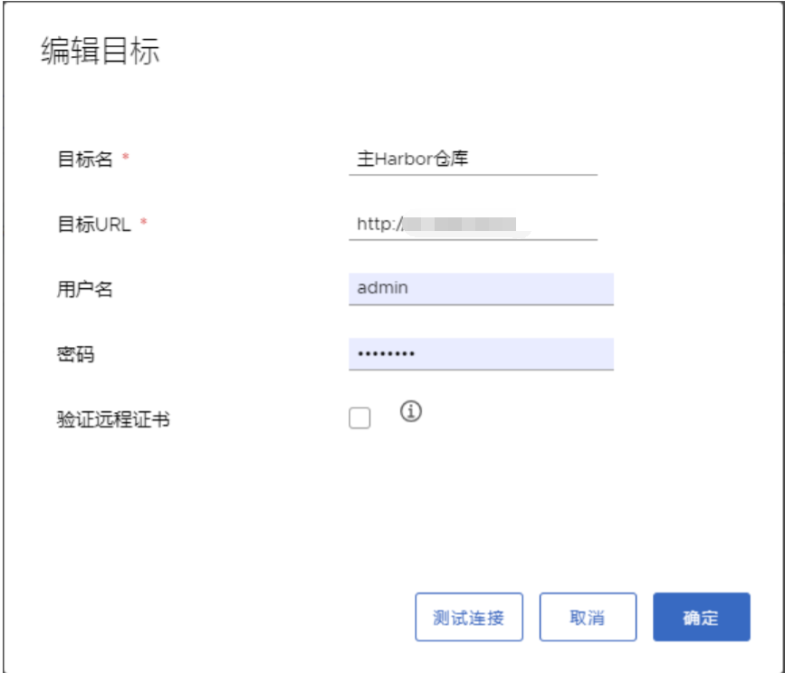
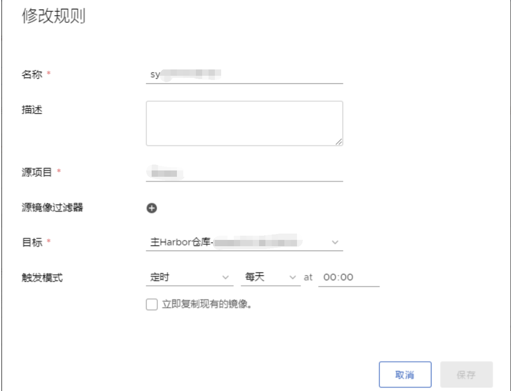

关于博客说明
bat脚本
bat脚本中巧用sed grep awk命令
linux
"-"在tar命令中的巧用
利用iptables或防火墙指定ip访问服务器某个端口
如何设置centos7.6和Ubuntu19.4的ip4
Linux中磁盘扩展与缩减
二进制安装包的制作
heredocument的巧用
docker
docker 安装与优化
harbor的安装和注意事项
harbor仓库镜像同步
如何制作出合适的镜像
逐个和批量导出导入docker镜像
rancher和kubernetes
kubectl常用命令汇总（以及curl注入）
docker run image -args对应yaml语法/rancher UI操作方式
在线安装高可用的rancher
离线helm安装高可用rancher
rancher中快速部署应用
利用rancher商店搭建es和beat
rancher平台不可用下如何使用kubectl命令
Jenkins
Jenkins调用docker编译程序
利用docker 镜像，快速搭建Jenkins环境
jenkins自由风格构建job
jenkins多种pipeline构建job
jenkins config and job的备份
持续集成项目实战
利用Jenkins+gitbook+git+node-ejs搭建一套实时更新多版本文档网站
采用jenkins+harbor+kubernetes自动部署最新程序
shell
shell 脚本中获取脚本所在路径
sed不常见用法
getopt与getopts用法
选择项用法
字符串截取
jmeter
利用jmeter模拟手机接口测试
证书申请与制作
私有证书制作
NGINX
如何利用nginx指向本地静态网页
如何利用nginx实现负载均衡和反向代理
nginx其他知识
git
git日常使用命令
gitlab搭建和备份
自动化测试技术
手机自动化
monkey测试
adb常用命令
uiautomator 自动化测试
数据库
mongo
mongodb安装
mongo分片式集群
MySQL
linux中安装MySQL5.6/5.7
虚拟化技术
vcenter
利用模板快速部署centos7服务器
Java开发与其中间件安装配置
websphere8.5安装和使用
tomcat、weblogic、was等组件jvm调整
java基础知识大串联
for循环实践：生成一万内的质数
比较两个数组是否相同
关于数组位置调整和元素出现次数统计代码
for和while异同比较
利用单向链表学习递归
装饰者模式扩充方法
枚举和switch结合使用
接口与lamda表达式
利用购物车系统学习HashMap与equals方法重写
利用synchronize关键字了解死锁
如何利用多线程交替输出奇偶数
JDK8新特性-Stream详解
NIO和IO遍历指定目录效果对比
利用NIO复制文件
利用反射机制遍历String的字段和方法
大数据处理
druid安装与优化
kafka+zookeeper
kafka常用命令
zookeeper和kafka参数调整
redis
redis多实例
正确使用工具事半功倍
搜索引擎的使用
gitbook 的巧用
有道云笔记
GitHub搭建个人网站
Published with GitBook
harbor仓库镜像同步
主备 Harbor 部署（harbor同步）
1，仓管管理中，新建目标
2，编辑目标
3，新建规则
主备 Harbor 部署（harbor同步）
前提 两台或以上harbor服务器，其中一台为主服务器，其他为备份服务器
1，仓管管理中，新建目标
2，编辑目标

3，新建规则
选择复制管理选项，点击新建规则，然后填写主 harbor 需要同步复制的仓库和同步规则，最后点击保存，即可。

results matching "
"
No results matching "
"


{kind=link}
{kind=link}